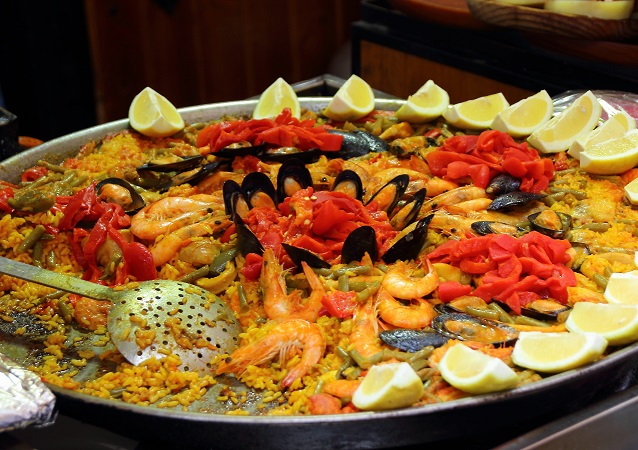

Paella - spanisches Nationalgericht

Zutaten für
10
Meeresschnecke(n)
200 g
Miesmuschel(n)
200 g
Kaninchenfilet(s)
2
Kaninchenkeule(n)
100 ml
Olivenöl
500 g
Garnele(n) (Tiger-Garnelen)
200g
Calamaretti
5
Tomate(n)
4 g
Safranfäden
2 kg
Reis (Paellareis)
4 g
Safranfäden
2 kg
Reis (Paellareis)
3 l
Gemüsebrühe
3
Schalotte(n)
1
Frühlingszwiebel(n)
1
Zitrone(n)
Zubereitung
Die Tuben der Calamaretti abtrennen, der Länge nach aufschneiden und die Haut einritzen. Zusammen mit
den Tentakeln und den ganzen Tiger-Garnelen in einer Pfanne mit Öl anbraten, wieder herausnehmen und zur
Seite stellen.
Noch einmal etwas Öl in die Pfanne geben und die vorderen Kaninchenkeulen anbraten. Das Kaninchenfilet und das Fleisch von den Hinterläufen in kleine Würfel schneiden. Knoblauch hacken, Schalotten in Ringe schneiden und zusammen mit dem restlichen Kaninchenfleisch in die Pfanne geben. Alles kurz anschwitzen.
Paprika in Streifen schneiden und dazugeben. Alles an den Rand der Pfanne schieben. In die Mitte noch einmal etwas Öl geben und den Safran damit vermischen. Klein geschnittene Tomaten darauf geben und mit dem Kaninchen vermischen.
Anschließend den Reis hinzufügen, anschwitzen und mit der Brühe ablöschen. Gut umrühren und so lange köcheln lassen, bis der Reis zu quellen beginnt. Danach das Seafood dazugeben und vorsichtig unterrühren. Nun nicht mehr umrühren und den Reis so lange köcheln lassen, bis er fast gar und der Sud nahezu verkocht ist.
Die Miesmuscheln und die Seeschnecken mit der Öffnung nach unten in die Paella stecken. Noch einmal ca. 5 Minuten ziehen lassen, bis der Reis gargezogen ist und die Muscheln sich geöffnet haben. Mit Salz und Pfeffer abschmecken, frisch gehackte Petersilie und Frühlingslauch unterrühren und mit Zitronenspalten garnieren.
Noch einmal etwas Öl in die Pfanne geben und die vorderen Kaninchenkeulen anbraten. Das Kaninchenfilet und das Fleisch von den Hinterläufen in kleine Würfel schneiden. Knoblauch hacken, Schalotten in Ringe schneiden und zusammen mit dem restlichen Kaninchenfleisch in die Pfanne geben. Alles kurz anschwitzen.
Paprika in Streifen schneiden und dazugeben. Alles an den Rand der Pfanne schieben. In die Mitte noch einmal etwas Öl geben und den Safran damit vermischen. Klein geschnittene Tomaten darauf geben und mit dem Kaninchen vermischen.
Anschließend den Reis hinzufügen, anschwitzen und mit der Brühe ablöschen. Gut umrühren und so lange köcheln lassen, bis der Reis zu quellen beginnt. Danach das Seafood dazugeben und vorsichtig unterrühren. Nun nicht mehr umrühren und den Reis so lange köcheln lassen, bis er fast gar und der Sud nahezu verkocht ist.
Die Miesmuscheln und die Seeschnecken mit der Öffnung nach unten in die Paella stecken. Noch einmal ca. 5 Minuten ziehen lassen, bis der Reis gargezogen ist und die Muscheln sich geöffnet haben. Mit Salz und Pfeffer abschmecken, frisch gehackte Petersilie und Frühlingslauch unterrühren und mit Zitronenspalten garnieren.
Rezept erstellt von

Fabian Wagner